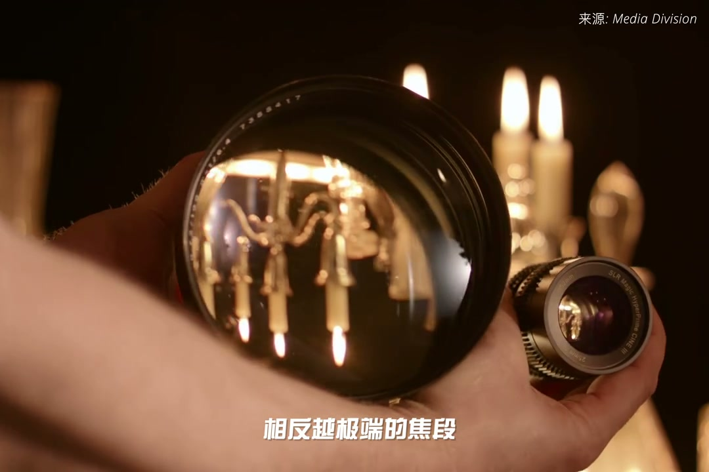
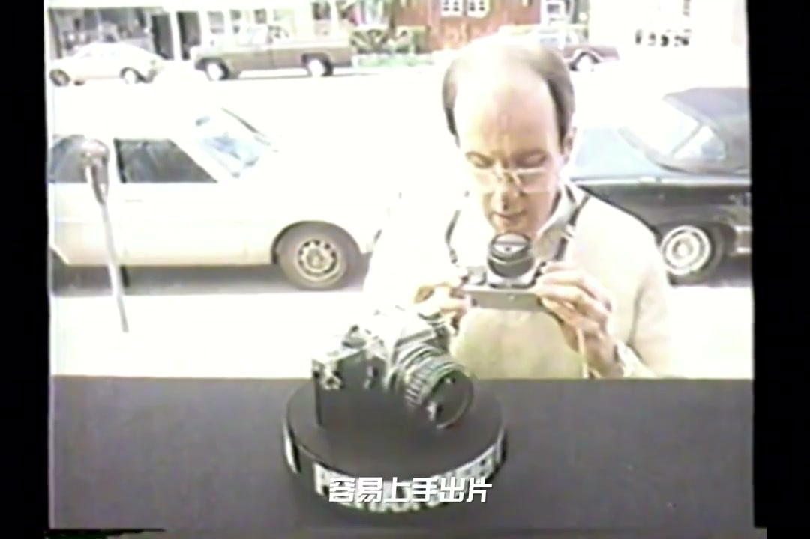
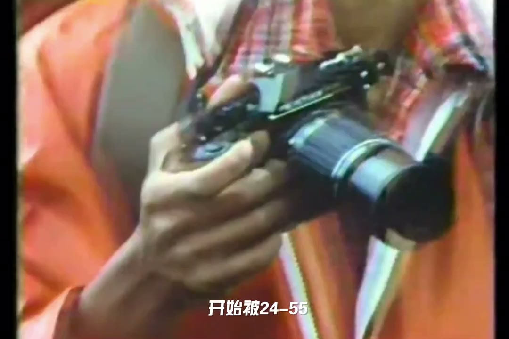
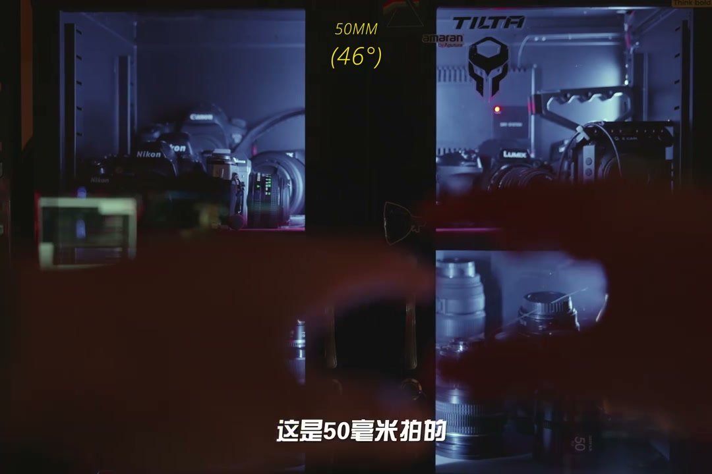
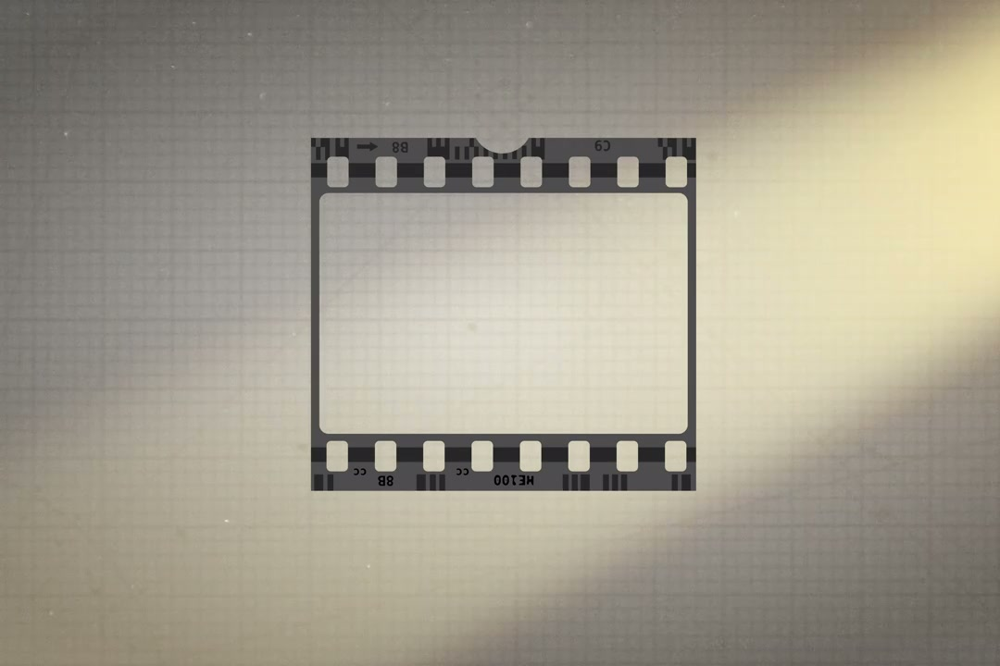

内容要点
[00:00] 为什么50毫米被誉为标准镜头
[00:02] 简单的原因是50毫米焦距
[00:04] 在光学性能、体积、成本
[00:06] 制造难度之间取得了最好的平衡
[00:08] 用现代的话说
[00:09] 就是当年摄影权的爆款产品
[00:11] 相反越极端的焦段
[00:13] 制造出成像优秀
[00:14] 且大光权的镜头越困难
[00:16] 在早期焦片的年代
[00:18] 套机都是捆绑一个标准焦段
[00:20] 45、50、55、58毫米
[00:23] 取决于平排
[00:24] 优势是便宜
[00:25] 容易上手出片
[00:26] 有效的让更多消费者跌入摄影坑
[00:29] 第一台批量销售的35毫米相机
[00:31] 莱卡一
[00:32] 就选用了50毫米F3.5
[00:34] 作为套头搭配
[00:36] 渐渐的
[00:36] 制作变焦镜头技术越来越好
[00:38] 套机镜头开始被24-55
[00:41] 24-70之类的变焦镜头取代
[00:44] 数码时代
[00:45] 我们很少再能看到50毫米定焦
[00:47] 作为套头销售
[00:48] 而50毫米
[00:49] 真不是人眼视野看到的焦段
[00:51] 这点很容易批摇
[00:52] 这是50毫米拍的
[00:54] 我们再仔细看一下周围
[00:55] 我们的视野比50毫米宽多了
[00:58] 更像是运动相机的视角
[01:00] 但50毫米近视人眼视角的理论
[01:02] 也不是完全无道理
[01:03] 假设站在一幅画座前
[01:05] 我们人类会很自然地调整
[01:07] 我们离画幅的距离
[01:08] 直到画幅边缘
[01:09] 和我们的视角线
[01:10] 呈30-60度之间
[01:12] 因为这个是人眼十字
[01:14] 变色的视野范围
[01:15] 是人眼获取信息的密集区域
[01:17] 而50毫米的视角
[01:18] 就是46度
[01:20] 35毫米胶卷的对角线为43毫米
[01:23] 也和整数的50毫米接近
[01:25] 这种焦距
[01:26] 被认为能提供最自然
[01:28] 或中性的通知效果
[01:29] 所以50毫米作为标准焦段
[01:31] 是早期工业能力
[01:32] 和营销环境的历史原因
[01:34] 结合了人体工学和审美
[01:36] 多因素
[01:37] 逐渐演化出来的概念
[01:38] 更多关于镜头的特性
[01:40] 可以回看我的长视频
[01:41] 镜头的秘密
[01:42] 感谢收看《全人声》
[01:43] 咱们下期再见




